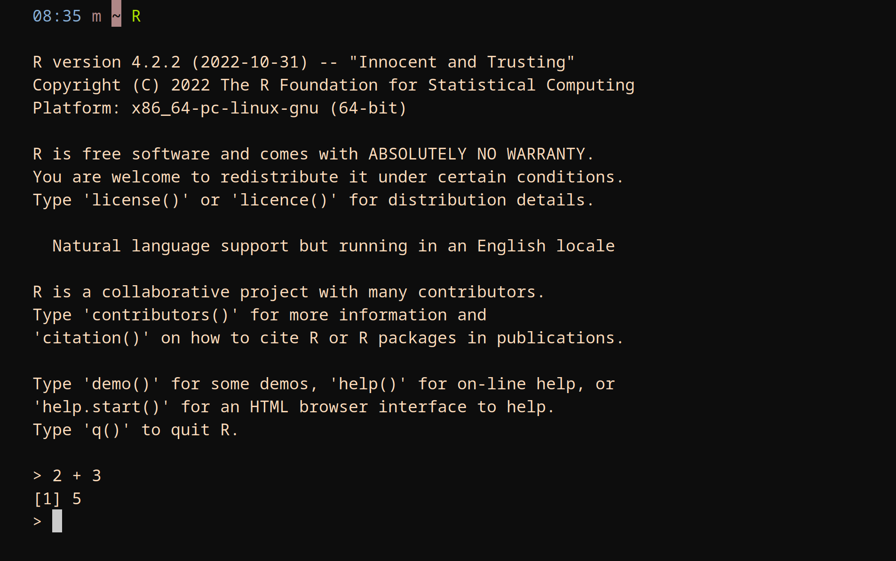
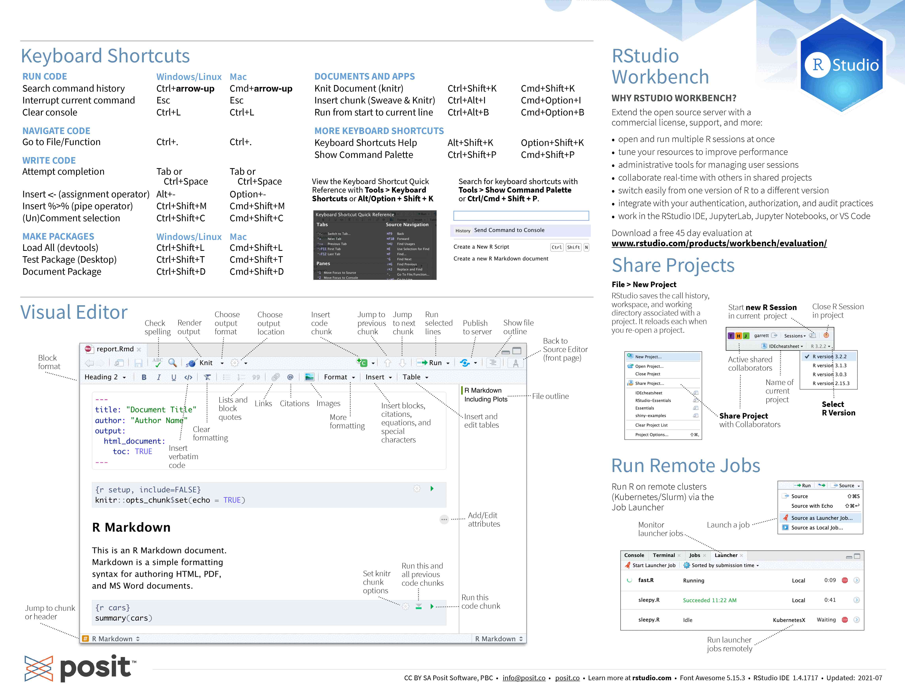

Running R for this course
This section covers the various ways R can be run and get you started using our RStudio server for this course.
Running R
R being an interpreted language, it can be run non-interactively or interactively.
Running R non-interactively
If you write code in a text file (called a script), you can then execute it with:
Rscript my_script.RThe command to execute scripts is Rscript rather than R.
By convention, R scripts take the extension .R.
Running R interactively
There are several ways to run R interactively.
- Directly in the console (the name for the R shell):

- In Jupyter with the R kernel (IRkernel package).
- In another IDE (e.g. in Emacs with ESS).
- In the RStudio IDE.
The RStudio IDE is popular and this is what we will use today. RStudio can can be run locally, but for this course, we will use an RStudio server.
Accessing our RStudio server
You do not need to install anything on your machine for this course as we will provide access to a temporary RStudio server.
A username, a password, and the URL of the RStudio server will be given to you during the workshop.
Sign in using the username and password you will be given while ignoring the OTP entry. This will take you to the server options page of a JupyterHub.
Select the following server options:
- Time: 4 hours
- Number of cores: 1
- Memory: 3700 MB
- User interface: JupyterLab
Then press “Start” to launch the JupyterHub. There, click on the “RStudio” button and the RStudio server will open in a new tab.
Using RStudio
For those unfamiliar with the RStudio IDE, you can download the following cheatsheet:

from Posit Cheatsheets